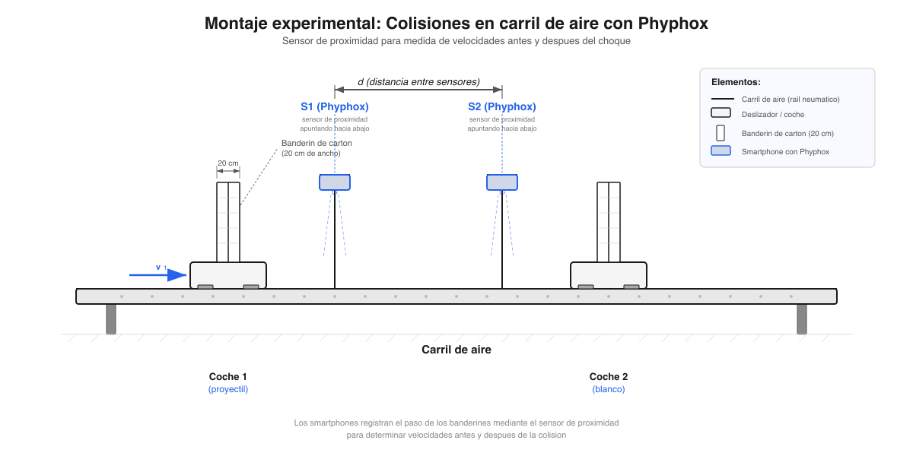

Técnica complementaria — Laboratorio de Mecánica, UNED
2026-04-16
Se describe un método alternativo para la medida de tiempos de tránsito y velocidades de objetos en movimiento rectilíneo, utilizando el sensor de proximidad infrarrojo de smartphones y la aplicación gratuita Phyphox. El método, basado en el trabajo de Khongthiamsri & Puttharugsa (2024), sustituye las fotopuertas convencionales por smartphones estacionarios que registran el paso de un banderín de cartón. Se detallan los modos de operación (duración y paralelo), las limitaciones temporales del sensor, y las condiciones óptimas de uso en el laboratorio.
En muchos laboratorios de mecánica, la medida de velocidades de objetos en movimiento rectilíneo se realiza mediante fotopuertas (photogates): dispositivos optoelectrónicos que registran el tiempo que tarda un banderín en interrumpir un haz de luz infrarroja. Sin embargo, no todos los centros asociados de la UNED disponen de fotopuertas.
Este documento describe un método alternativo basado en el sensor de proximidad del smartphone y la aplicación gratuita Phyphox (Physical Phone Experiments), desarrollada por la RWTH Aachen University. El método fue propuesto por Khongthiamsri & Puttharugsa (2024) para la medida de velocidades y aceleraciones en movimiento rectilíneo sobre un plano inclinado, y aquí se adapta para su uso general en el laboratorio de mecánica.
Limitación temporal del sensor de proximidad
El sensor de proximidad de los smartphones tiene una resolución temporal limitada, del orden de \sim 120\textrm{–}200 ms según el modelo de teléfono. Esto impone un límite inferior al tiempo de tránsito que puede medirse con fiabilidad, y por tanto un límite superior a la velocidad medible para un banderín de longitud dada. Es imprescindible tener en cuenta esta limitación al diseñar el experimento.
La mayoría de los smartphones incorporan un sensor de proximidad infrarrojo (IR), situado junto a la cámara frontal o el auricular. Su función principal es detectar la proximidad de la oreja durante una llamada para apagar la pantalla. El sensor es binario: solo distingue dos estados, cerca (near) y lejos (far), con un umbral de detección de aproximadamente 5 cm (variable según el modelo).
Cuando un objeto (como un banderín de cartón) pasa por delante del sensor a corta distancia, el sensor conmuta del estado lejos al estado cerca, y vuelve a lejos cuando el objeto se aleja. La aplicación Phyphox registra los instantes de estas transiciones con la mayor resolución que permite el hardware del teléfono.
Phyphox es una aplicación gratuita y de código abierto (disponible para iOS y Android) que permite acceder a los sensores del smartphone para realizar experimentos de física. Dentro de sus herramientas, el cronómetro de proximidad (Proximity Stopwatch) ofrece dos modos de operación relevantes:
\Delta t = t_2 - t_1 \tag{1}
Si un banderín de longitud conocida \Delta d pasa por delante del sensor, la velocidad media del objeto durante el tránsito es:
\boxed{v = \frac{\Delta d}{\Delta t}} \tag{2}
donde \Delta d es la longitud del banderín y \Delta t es el tiempo registrado en el modo duración. Esta expresión es formalmente idéntica a la utilizada con fotopuertas convencionales.
Los smartphones se colocan boca abajo (pantalla hacia abajo) sobre un soporte elevado, de modo que el sensor de proximidad quede orientado hacia abajo, apuntando a la trayectoria del objeto móvil. El objeto, al pasar por debajo, lleva un banderín vertical de cartón que interrumpe el campo de detección del sensor.
Identificación del sensor de proximidad
Para localizar el sensor de proximidad de un smartphone: abrir Phyphox → Proximity Stopwatch → modo duración → iniciar la medida → pasar el dedo lentamente por la parte superior del teléfono. El cronómetro se activará cuando el dedo pase sobre el sensor.

Distancia sensor–banderín
El banderín de cartón debe pasar a una distancia inferior a \sim 5 cm del sensor de proximidad. Si el soporte del smartphone está demasiado elevado, el sensor no detectará el paso del banderín. Se recomienda que la distancia entre el sensor y la parte superior del banderín sea de 2\textrm{–}3 cm.
El factor limitante del método es la resolución temporal del sensor de proximidad. A diferencia de una fotopuerta (cuya resolución es del orden de 0{,}1 ms), el sensor de proximidad del smartphone tiene una resolución típica de:
\Delta t_{\min} \approx 120\textrm{–}200 \text{ ms} \tag{3}
según el modelo de teléfono (Khongthiamsri & Puttharugsa, 2024). Esto impone una velocidad máxima medible para un banderín de longitud \Delta d:
v_{\max} = \frac{\Delta d}{\Delta t_{\min}} \tag{4}
| Longitud del banderín (\Delta d) | \Delta t_{\min} = 120 ms | \Delta t_{\min} = 200 ms |
|---|---|---|
| 10 cm | 0,83 m/s | 0,50 m/s |
| 15 cm | 1,25 m/s | 0,75 m/s |
| 20 cm | 1,67 m/s | 1,00 m/s |
| 30 cm | 2,50 m/s | 1,50 m/s |
Recomendación
Se recomienda utilizar banderines de 20 cm de longitud e impulsar los objetos de modo que la velocidad no supere \sim 1{,}0 m/s. Antes de realizar medidas, verificar la resolución temporal del sensor pasando rápidamente el banderín frente al teléfono: el tiempo mínimo registrado en modo duración indica el límite del sensor.
| Característica | Fotopuerta | Smartphone (Phyphox) |
|---|---|---|
| Resolución temporal | \sim 0{,}1 ms | \sim 120\textrm{–}200 ms |
| Rango de velocidades | Muy amplio | \lesssim 1{,}0 m/s (con \Delta d = 20 cm) |
| Coste | €50–200 por unidad | €0 (usa teléfono del alumnado) |
| Disponibilidad | Requiere equipamiento | Universal |
| Facilidad de uso | Alta | Media (requiere configuración) |
| Precisión | Alta (\Delta v/v \sim 1\%) | Moderada (\Delta v/v \sim 5\textrm{–}15\%) |
Si la resolución del sensor de proximidad resulta insuficiente para un experimento concreto, Phyphox ofrece otros cronómetros con mejor resolución temporal:
La velocidad medida mediante este método es v = \Delta d / \Delta t. Aplicando propagación de errores:
\frac{\Delta v}{v} = \sqrt{\left(\frac{\Delta(\Delta d)}{\Delta d}\right)^2 + \left(\frac{\Delta(\Delta t)}{\Delta t}\right)^2} \tag{5}
donde:
Para un banderín de 20 cm y un tiempo de tránsito de 400 ms (velocidad \sim 0{,}5 m/s):
\frac{\Delta v}{v} \approx \sqrt{\left(\frac{0{,}5}{20}\right)^2 + \left(\frac{50}{400}\right)^2} \approx \sqrt{(0{,}025)^2 + (0{,}125)^2} \approx 12{,}7\%
El error está dominado por la incertidumbre temporal del sensor. Comparar con el \sim 1\% típico de una fotopuerta.
Antes de utilizar el método en un experimento, se recomienda realizar la siguiente calibración rápida: